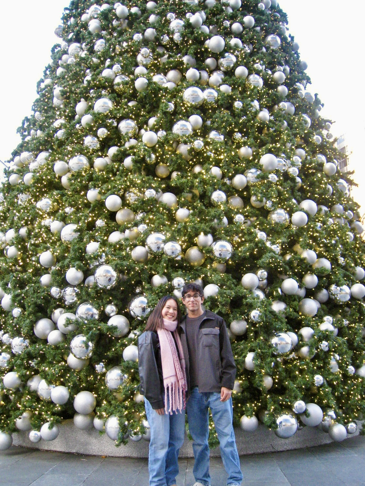

Tracy,
I'm so SOOOOOOOOOO incredibly proud of you. I know how tough studying
for MCAT was for you with everything you sacrificed this semester, and all the
sleep you lost. I know sometimes it felt insane and not worth it, but you're done
now. Just being able to sit through it and take the MCAT is a huge accomplishment.
I have no doubt that you crushed it, probably even scored over a 520.
You are amazing, hardworking, resillient, breathtaking, and so so so smart, you
actually mog me. I'm so lucky to have you in my life, and to have witnessed you
complete a huge milestone, that you're gonna look back to once you become the
best doctor I know (and that way I won't ever need to go to a doctor again).
Now you get to go to Ireland!!!!! Eventhough I'm bummed I wont get to see you
for almost another month, I'm so excited for you, and jelous of all the places
you'll get to visit, all the beer you're going to drink, and
OOOOOO MMMMMMMM GGGGGGGGGG THE FOOOD. You know that song Hey there Delilah, well for the first time I'll actually be able to sing it and say...
“Hey there Mozzarella, what's it like in Dublin (city)? I'm a
thousand miles away but tonight you look so pretty, yes you do...” ♡
Sorry, had to use your full government name for it to work ;)
You've most definetly earned this trip, and I hope you have the bestest time ever.
I know the yap will be generational every night, and I'm so looking forward to it.
I would say I'm also looking forward to the scenery in the pictures you take but I
feel you'd lowkey ruin it because those views would be nothing compared to you.
Again, I'm so proud of you! Everyone is!
I love you so much, and I can't wait to see you and give you the biggest hug!
Love,
PBJ
